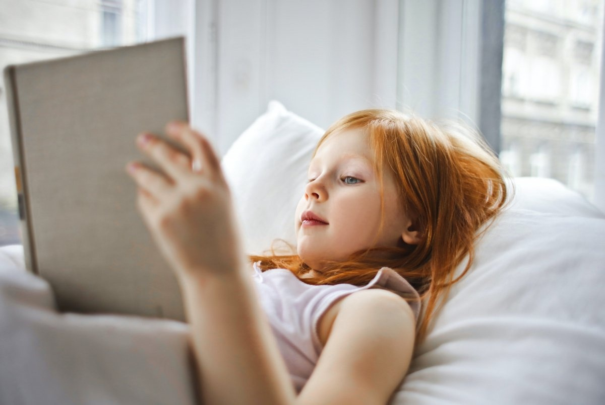
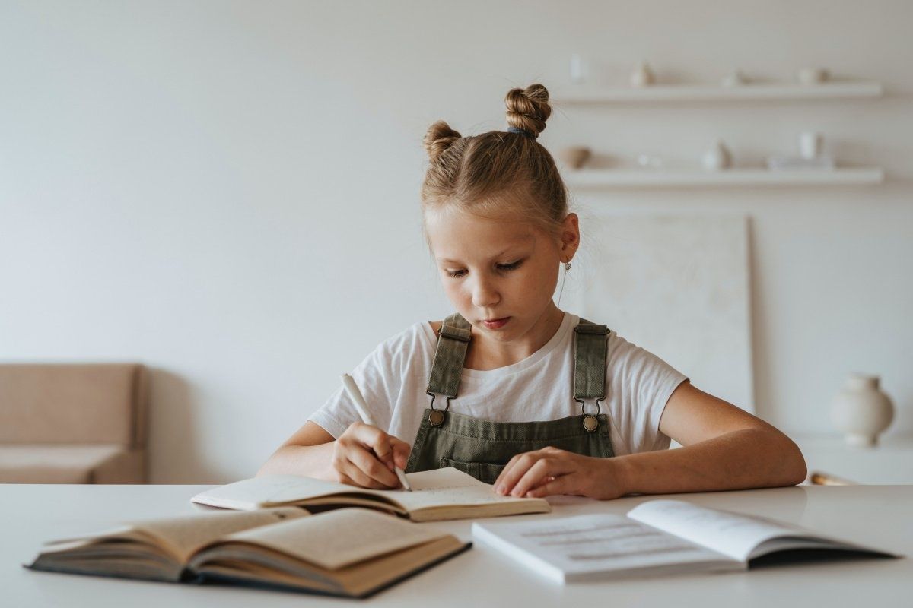

Як розвинути дітям любов до читання

|
|
Однак любов до читання і звичка читати книги протягом усього життя формується вдома.
Вдома дитина проводить набагато більше часу, ніж в школі – і це найочевидніша причина, чому саме батьки повинні прищеплювати дитині любов до читання.
До цього питання можна підійти і з іншого боку.
Сьогодні багато експертів в сфері освіти говорять про те, що навчання читанню в школі не сприяє тому, щоб дитина полюбила читати книги.
У молодших класах головне завдання-розвинути у дитини техніку читання.
Успішність дитини оцінюють по швидкості читання, словникового запасу і вмінню розуміти основну ідею прочитаного тексту.
Прийнято вважати, що від цього залежить подальша успішність дитини в навчанні: якщо він вміє швидко читати, він зможе добре засвоювати навчальний матеріал в майбутньому.
Однак при цьому не приділяється увага естетичному аспекту читання. Залишається осторонь і той факт, що книги формують людські цінності.
Батьки можуть заповнити цю прогалину і прищепити дитині любов до книг. Розглянемо кілька порад про те, як це можна зробити вдома.
|
Як розвинути дітям любов до читання

|
|
Багато з них-так звані збалансовані білінгви, вони вивчили другий (іноді і третій) мову в дитинстві, занурившись в спілкування з носіями і близько познайомившись з культурами народів, що говорять на цих мовах. Такі білінгви вважають обидві мови рідними і ніколи не вивчали їх як іноземні.
Білінгвізм може розвиватися в таких ситуаціях:
- діти проживають в країнах або регіонах, де в ходу у населення кілька мов;
- діти народжені в змішаних шлюбах, коли батьки говорять з ними кожен на своїй рідній мові;
- сім'я з маленькими дітьми переїжджає в нову країну, і діти там продовжують говорити з батьками на їхній мові, а з оточуючими спілкуються мовою середовища;
- мовне середовище створюється штучно: батьки наймають няню-носія іншої мови, віддають в по-справжньому білінгвальний дитячий сад або просто в дитячий сад, де весь час з дітьми говорять іншою мовою.
Практично у всіх цих випадках в результаті, коли дитина підростає, як правило, «лідирує» основна мова середовища. Адже на ньому він розмовляє більшу частину часу. Друга мова (наприклад, мова батьків) завжди знаходиться в залежному становищі. І залежить його засвоєння саме від мотивації дорослих, які оточують дитину.
|
Зв'язок зі мною
 Телеграм: @dkhoock
Телеграм: @dkhoock
 пошта: avdeenko2211@gmail.com
пошта: avdeenko2211@gmail.com
 Інстаграм: @avdeenkovasil
Інстаграм: @avdeenkovasil
|
|
 Головна
Головна
 Батькам
Батькам
 Методичні матеріали
Методичні матеріали
 Розклад
Розклад